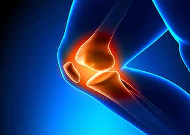

Get treated with our best in class surgeons for
arthroscopy and sports injuries at our Hospitals.
Video Testimonials
Dipika Raut - Dance Recovery
Good dancer from Odisha settled in
Secunderabad
PCL Avulsion Sports Injury
Key hole German Technique by Dr.Mir Jawad Zar
Khan
Bucket Handle Meniscus Tear
18yrs male sports injury surgery by Dr.Mir
Jawad Zar Khan
ACL Ligament Reconstruction
Arthroscopic surgery procedure
Mohd Shafii - ACL Recovery
43 years old from Karnataka, 1 year ACL injury
Praveen Kumar - ACL Surgery
ACL Reconstruction at Germanten Hospital
ARTHROSCOPY
Arthroscopic surgery is a procedure that allows surgeons to visualize, diagnose, and treat
joint problems. The name is derived from the Greek words arthron (joint) and skopein (to
look at). Arthroscopy is performed using an arthroscopy, a small fiber-optic instrument that
enables a close look at the inside of a joint through a small key hole incision, where
interior of the joint can be visualized through a telescope and the whole procedure can be
seen on a TV monitor.
Before the introduction of optical and fiber optic equipment in orthopedics, surgery on the
inside of any joint meant making a large incision and opening the joint to do even the most
minor procedure. Now its changing and today it is possible to do many surgeries through
arthroscopy.
The accuracy of arthroscopy is said to be 100% for diagnosis compared to diagnostic imaging
such as MRI in diagnosing damage to the bones, cartilage, tendons, ligaments and muscles
that make up a joint. Arthroscopic surgery may be used to relieve mechanical joint problems,
such as buckling, stiffness, or locking, and can preclude or delay the need for more
aggressive surgery such as a joint replacement.

Arthroscopy Procedure
Sports Injuries Treatment
SPORTS INJURIES
Being minimally invasive, surgeries can be performed as day care surgeries, offering reduced
costs and early return to functionality.
Sports injuries to the hip, shoulder, elbow, wrist, foot and ankle can be treated with
Arthroscopy.
HTH has a very advanced Arthroscopic system. The Arthroscopic procedures are recorded and
intra-op photographs are taken during the surgery and are given to the patient.
KNEE
ARTHROSCOPY
Knee is the largest joint and most commonly treated joint by arthroscopy
Common conditions
1. Torn meniscus: The cartilage is trimmed
to a stable rim or occasionally repaired
Meniscus repair
Partial menisectomy
Meniscus transplants
Radiofrequency chondroplasty
2. Torn surface (articular) cartilage
Autologous chondrocyte transplantation
Synthetic osteochondral implants
Mosaicplasty/osteochondralautograft transfer
Osteochondral transplants
3. Removal of loose bodies and cysts.
4. Reconstructive surgery
Arthroscopic ACL reconstruction
Arthroscopic PCL reconstruction
MCL and PCL repair and reconstruction
Multiple ligament reconstruction for knee dislocations
5. Patello-femoral (knee-cap) disorders
MPFL repair and reconstruction
Proximal and distal realignment surgery
6. Washout of infected knees
7. General diagnostic purposes
SPORTS MEDICINE
DIVISION
Sports medicine target people to ameliorate their athletic performance, recover from sport
injuries, prevent future injuries, and help athlets to get back to their desire level of
performance. It benefits people who are trying to regain full function and those with
disabilities who are trying to increase mobility and capability. It is a quick growing
health care field, since health workers who specialize in sports medicine help different
people including recreational athelets and high school graduates of every age group. Whether
you developed your injury training for your first marathon or during a collegiate sports
tournament, our hospital's sports medicine experts are here to help get you back in action.
Our team of experts specializes in athletic injuries of the bones, joints, muscles,
cartilage and ligaments, with a special focus on shoulder, knee, hip, foot and ankle
conditions.
We monitor patients from their consultation and treatment analysing their current physical
state, desired outcomes and performance needs in mind and coordinate with rehabilitation
staff about their post-treatment care.
Sports Medicine links the gap between science and practice in the advancement of
exercise,health, and in study of sports,responsive scientific assessment and performance.
Regular features include, sports injury prevention and treatment,exercise for health, drugs
in sport and recommendations for training and nutrition.
Sports Medicine focuses on authentic research and definitive reviews in the field of sport
and exercise medicine. Sporting performance enhancement including nutrition, equipment and
training and research to:
Medical disorder associated with sport and exercise.
Injury prevention and treatment.
Exercise for physical recovery and health.
The application of physiological and biomechanical principles to specific sports.
Latest News
Germanten
Hospital has earned a prestigious position in the Times Health Survey 2023!